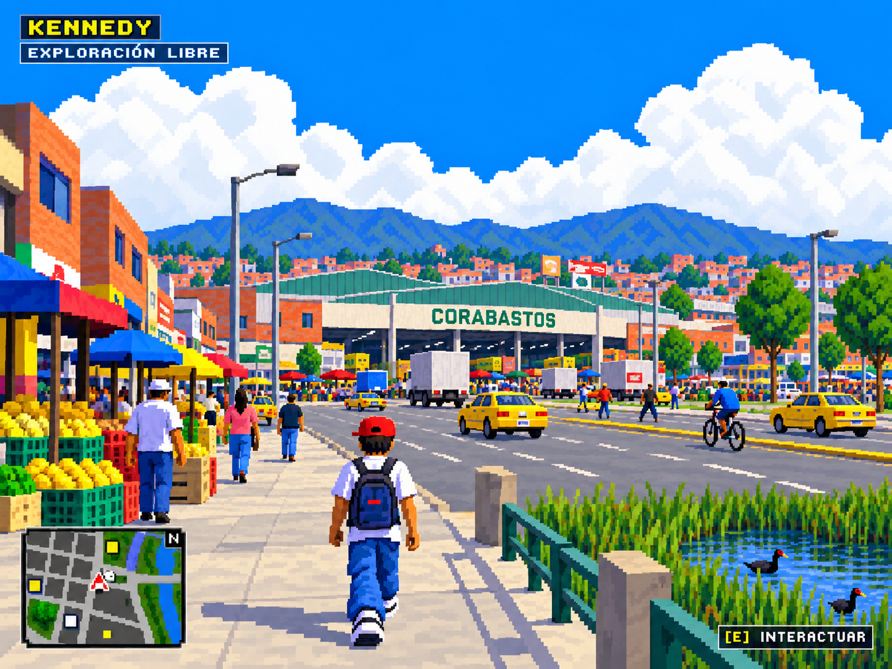

Conectividad
Vincular refugios y recursos mediante recorridos adecuados para distintos grupos de fauna.
PROPUESTA DE JUEGO / KENNEDY
¿Puedes conectar la vida
sin desconectar la ciudad?
Explora el barrio a pie, en tercera persona y transforma sus espacios para que las personas mantengan sus actividades mientras otras especies encuentran alimento, refugio y posibilidades de desplazarse.
Explorar tres escenarios ↓
En fase de concepto. Tres escenas jugables permiten caminar en tercera persona, cumplir misiones y seguir sus conexiones. Es un prototipo con recorridos delimitados. Cada escena incluye peatones, comercio, vehículos y fauna con espacios diferenciados.
TRES VENTANAS DEL MISMO TERRITORIO
Tres misiones en tercera persona: camina, interactúa y sigue las conexiones entre lugares. Selecciona una ventana y pulsa Entrar y jugar.
EL RETO
Las nueve acciones del prototipo conectan abastecimiento, circulación peatonal y refugios. La coexistencia exige mantener funciones humanas y condiciones de hábitat; no consiste en juntar a todos en el mismo espacio.
Vincular refugios y recursos mediante recorridos adecuados para distintos grupos de fauna.
Conservar y crear lugares con vegetación, alimento y condiciones para permanecer.
Mantener recorridos peatonales, acceso a viviendas, servicios y abastecimiento.
LA DINÁMICA PROPUESTA
Encontrar una barrera o un conflicto.
Conocer qué necesita cada grupo.
Elegir una acción y asignar presupuesto.
Ver cómo cambian las relaciones.
Revisar mejoras y conflictos pendientes.
REGLAS DEL DISEÑO
Compartir el territorio puede significar encontrarse, mantener una distancia o usar un espacio en momentos diferentes.